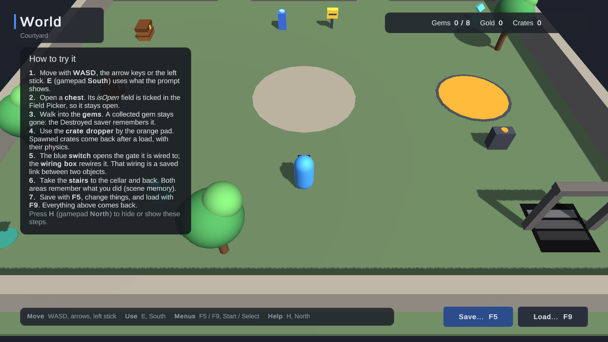
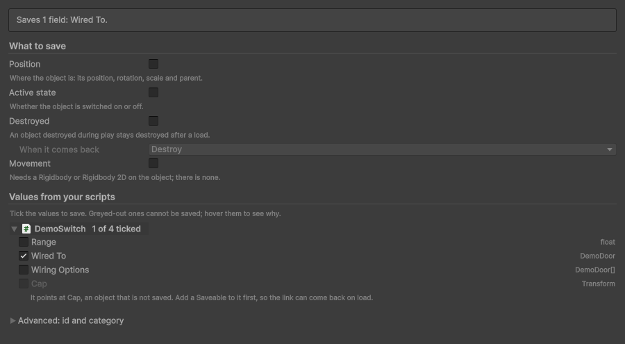

Walkthrough: world objects
Doors that stay open, pickups that stay collected, crates spawned during play, and switches wired to gates. Everything here is in the World demo: open Samples/Demos/Scenes/WorldDemo, press Play and follow along.

Doors and chests: a value from your script #
A chest's script has a field isOpen. To keep it:
- Select the chest and give it a Saveable (the Start window's Make objects remember their state, or Add Component → All In One Save Kit → Saveable).
- Under Values from your scripts, tick Is Open.
The Saveable's summary now reads "Saves position, active state and 1 field: Is Open." After a load, isOpen comes back. If the chest's lid is set up from isOpen in Start, also do it when a load finishes, because objects that are already running do not run Start again: in RestoreState if the script implements ISaveable, or in a SaveEvents.Loaded handler (Load order).
Pickups: stay collected #
A gem the player collects is destroyed. Keep Destroyed ticked on its Saveable (it is on by default): after a load, a collected gem is destroyed again instead of coming back. When it comes back chooses whether it is destroyed or only switched off.
Spawned objects: crates from a dropper #
Objects made during play come back too, if they are made from a prefab:
- Put a Saveable on the root of the prefab, here the crate.
- Make copies with an ordinary
Instantiate.
The Editor adds the prefab to the kit's Prefab Registry by itself when the prefab is saved. Each copy gets its own id as it is made and is saved with its position. Tick Movement to keep a Rigidbody's speed and spin, so a crate that was falling keeps falling after a load. On load, the kit re-creates each saved copy from the prefab and removes copies that were not in the save.
A copy of something that is not a registered prefab cannot be re-created; the kit leaves it out and says so (SK131). Objects in a pool need two calls, SaveKit.World.Spawned and SaveKit.World.Despawned (Objects spawned at runtime).
Links between objects: a switch wired to a gate #
The switch's script has a field that points at the gate it opens. Tick that field on the switch's Saveable. The link is saved as the gate's id, so after a load the switch points at the same gate again, even if the wiring box rewired it during play. The gate needs a Saveable too; the Field Picker greys out a link to an object without one and says why.
Links to assets, such as an item's ScriptableObject, work the same way once the asset is in the Asset Registry: select it and choose Tools → All In One Save Kit → Registries → Register Selected Assets.
Scenes you leave and come back to #
Take the stairs to the cellar and back. Each area remembers what you did there, because the kit keeps the state of scenes the player has left (scene memory) and puts it back when the scene loads again.

Load scenes through SaveKit.LoadScene, or call SaveKit.World.CaptureScene before unloading a scene yourself, so its changes are kept. The kit warns when a scene with Saveables unloads without being captured.


Next: The save and load menu.